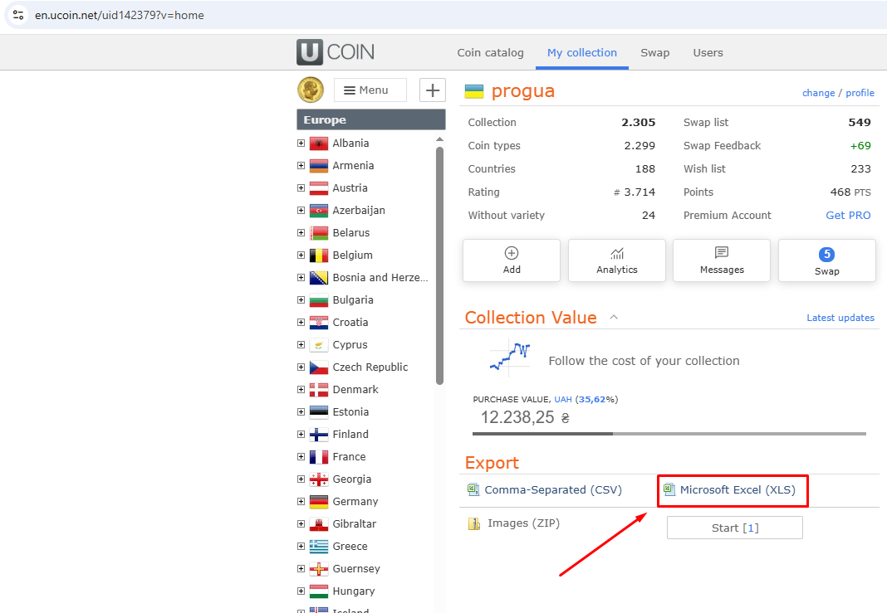

Import from uCoin

Screenshot: images/08-ucoin-export.png
Export from uCoin
On the uCoin website open your collection and export it to Excel (.xlsx). Save the file on your computer.
Import
- File → Import from uCoin (.xlsx) (or the Import button) and choose the file.
- The program shows how many rows were read and which rows have errors (skipped). Confirm the import.
- The current collection is replaced by the file. A backup copy of the database is made first:
Db\…before-import-<date>.bak.
What is kept on a repeated import
You can import a newer uCoin export at any time. For coins that are in the new file, the program keeps:
- Numista links (#Numista, issue, rarity index, Numista search phrase) and the ✓ of uploaded items;
- photos of coins and items.
The result shows how many links and photos were kept and lost. Photos of coins that are no longer in the file are moved to Photos\_before-import-<date>\.
Countries are matched by name. If you rename a country in Reference lists, the old uCoin name will appear again after the next import.